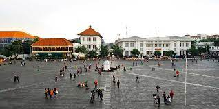
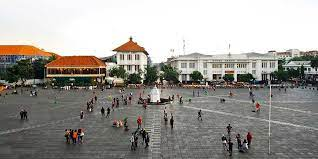

(+62)81218556702


Easy self-care tips for busy introverts
In a friendly tone, I'm sure there are extroverts out there who turn inward to recharge, but I've never met one. For me, the key to feeling happy and energetic is to connect with people and thoughtfully liit my time alone. There are many ways to practice self-care, and as I'm writing this I'm thinking of more than 10 things that I do to take care of myself every single day, but here's 4 easy self-care tips for busy introverts, first, follow your basic needs, take breaks, get a grip on your energy, and make the most of the environment around you
Places to find beautiful stock photography
Using stock photgraphy is a great way to build up your professional presence online. But finding a perfect one to use can be a tiring task, especially if you are looking for styled stock photography. It is important to choose the right stock photo because it is part of your brand and entire online presence. Also, people will associate the photos with your brand. Your brand will have a certain look that you will try to maintain.
How to make any day your Sunday self care day
We have been witnessing how much has self care transformed over the last few years. It began as a way to encourage people to do more for themselves, which is amazing. But somewhere along the way, it became something people felt like they were forced to do. If you are feeling a little overwhelmed with this idea of the perfect self care routine, it's time to take a step back.Insteaed of focusing on having to fit in into your daily life, why not?
Recent Post

Ba ba ba ba na na
OCtober 2, 2022

I hate orange & I don't know why
May 23, 2022

Strawberry shortcake orange blossom
February 28, 2022
Reliance Peach Tree
January 12, 2022
Tag Clouds
Food
Travel
Technology
Product
Health Care
Life style
Instagram Feeds


 
